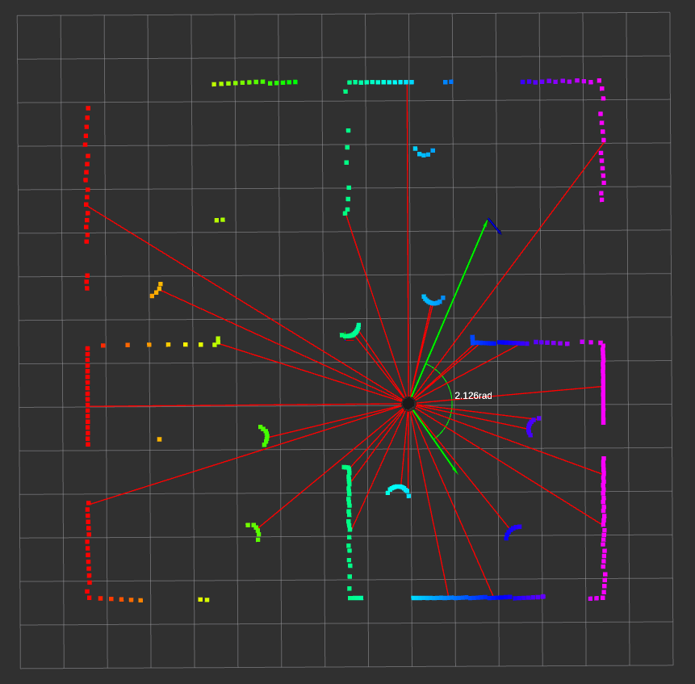

Tutorial
In this document you will find how you can setup your own world and robot to be used with this environment.
Usage with custom world
If you do not want to shuffle the obstacles at reset, the only thing you need to do is update the world name used in the launch argument declaration in simulation.launch.py or pass the sdf file during launch as:
ros2 launch tb4_gz_sim simulation.launch.py world:=src/turtlebot4/tb4_gz_sim/worlds/<world_name>.sdf
However, if you do prefer shuffling obstacles during reset for better generalization, you will need the map of your world.
[!NOTE] The map should not contain the obstacles that you want to be shuffled.
Then when making the environment be sure to specify: - world_name - map_path - yaml_path (this is the path to the map metadata) - obstacle_prefix: we need this to query the list of obstacles from gazebo - obstacle_clearance: distance between obstacles, should ideally be greater than the max obstacle radius
You can directly use scenario_generator.py to see if start/goal pairs and obstacles are being assigned properly.
python3 src/tb4_drl_navigation/tb4_drl_navigation/envs/diffdrive/scenario_generator.py -m path/to/<map>.pgm -y path/to/<map>.yaml
You should get something like:

Usage with custom robot.
The environment is originally build for a differential drive robot. If your robot is a differential drive robot then you can use it directly provided the topics used are scan, odom, cmd_vel. Otherwise you will have to make the necessary adjustments in ros_gz.py and in robot_localization EKF node config file, ekf.yaml.
Furthermore, be sure to specify the following parameters when making the environment: - robot_name: this is use to set the pose of the robot during reset. - robot_radius: Used for creating buffer around walls.
You also have the option to specify the following parameters.
- num_bins: by default we create 30 bins and take the shortest range from each bin and its
respective orientation to represent the environment state. It can be as high as len(ranges)
- min_separation: used to specify the minimum separation distance between the stat and goal pose.
- goal_sampling_bias: this parameter allows you to provide distance bias when choosing goal pose. The
default is uniform, but you can specify far or close as well.
- goal_threshold: threshold distance to conclude goal is reached
- collision_threshold: threshold distance to conclude collision is encountered
- time_delta: time in sec between observations.
- shuffle_on_reset: whether to shuffle obstacles on reset or not.
To check that everthing is working with your custom robot, try reseting the environment in debug mode as follows.
python3 src/tb4_drl_navigation/tb4_drl_navigation/envs/diffdrive/turtlebot4.py
You should see something like the following in rviz:

Limitations
[!WARNING] Currently this environment is not vectorized.